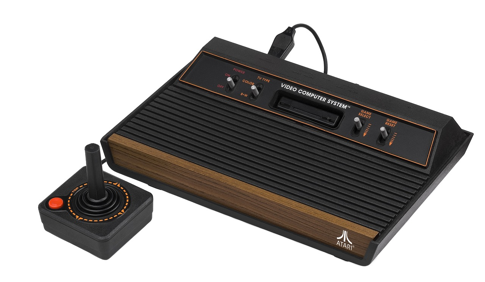

El término motor de videojuego fue acuñado a principios de los 90, asociándolo especialmente al inicio de los videojuegos en 3D, como los juegos de tiros en primera persona. Sin embargo, el primer motor de videojuego en 3D del que se tiene conocimiento fue Freescape Engine, desarrollado por Incentive Software en 1986.Hoy en día, adquirir un motor de videojuego varía mucho dependiendo de su origen: pueden ser de código abierto,shareware o pago, manejando todo tipo de valores. El proceso de desarrollo de un videojuego puede variar notablemente y es bastante común que los desarrolladores (a fin de solventar gastos) opten por reutilizar o adaptar un mismo motor de videojuego para crear diferentes videojuegos. Del mismo modo, existen motores de videojuegos que operan tanto en consolas de videojuegos como en sistemas operativos.
Historia
Antes de la existencia de motores de videojuegos, estos se desarrollaban como entidades individuales sin separación de áreas como gráficos y física. En los años 90 surgó el término "motor de videojuegos" en el contexto de juegos de disparos en primera persona como Wolfenstein 3D, Doom y Quake, los cuales licenciaron sus núcleos como base para crear nuevos motores.
Al madurar esta tecnología, los motores comenzaron a implementarse más allá del desarrollo de videojuegos, en áreas como entrenamiento profesional, uso médico y simulaciones militares.
Aunque el término se acuñó en los 90, existen antecedentes en sistemas de los 80 que se consideran motores de videojuegos, como el Sierra's AGI y SCI, LucasArts SCUMM y Freescape Engine. El primer motor 3D para juegos de PC fue el Freescape en 1986.
La creación de APIs como DirectX y OpenGL en los 90 impulsó la evolución de las tecnologías de videojuegos. Con el tiempo, crear motores propios se volvió muy costoso, por lo que surgieron compañías especializadas en construir motores para vender a otras.
Los motores modernos son muy complejos, con áreas separadas como renderización, programación, arte y diseño de niveles. Debido al límite del poder de GPUs y PPUs, lenguajes como C#, Java y Python son beneficiosos por su productividad.
La industria de videojuegos ha crecido enormemente. En 2007 tuvo ganancias de 9500 millones de dólares, superando al cine. En 2017 llegó a 36000 millones de dólares.

Un juego para el Atari 2600, por ejemplo, tenía que ser planeado desde cero, manteniendo el código más simple posible y manipulando píxel por píxel, para hacer un uso optimizado del hardware, debido a sus limitaciones